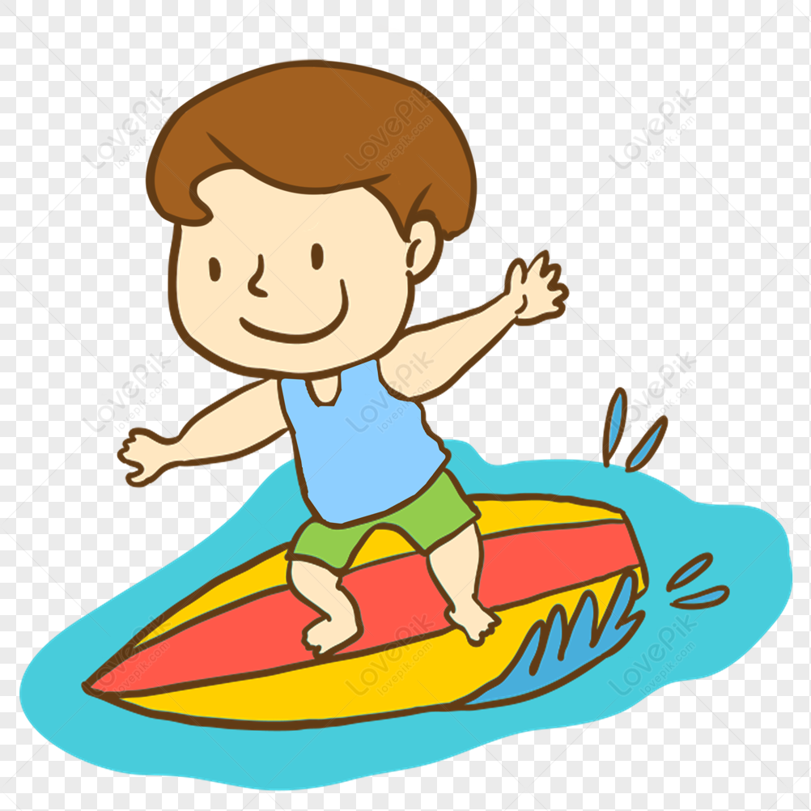

in my free time i live to fish, ive been fishing for my entire life and it is somthing that i enjoy. it is very relaxing and when you do get a fish is is in vergerating. my favorite fish to catch is the trout, they are found in most of the world and fisht really hard.
surfing is something i got really good at during quarintyn. my father has been surfing for a very long time. over the quarintine school on wensday and friday started at 10:00 so me and a few friends would wake up early and drive to the beach.